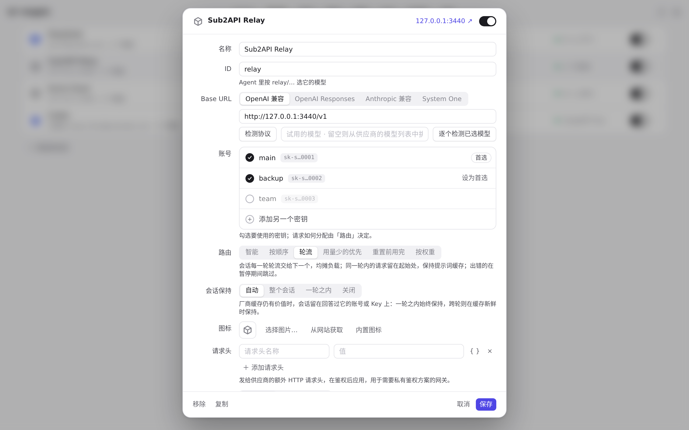
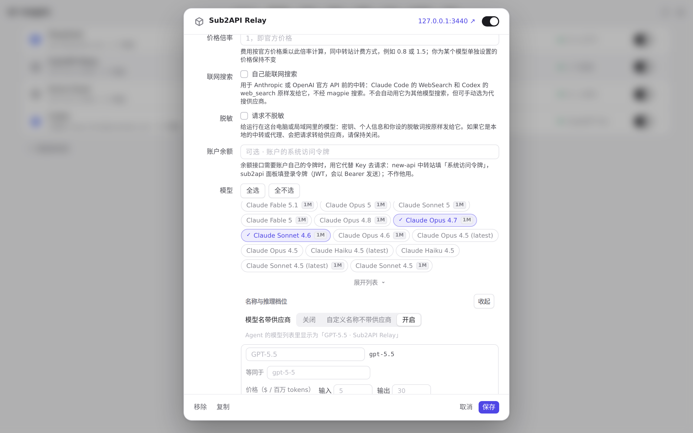
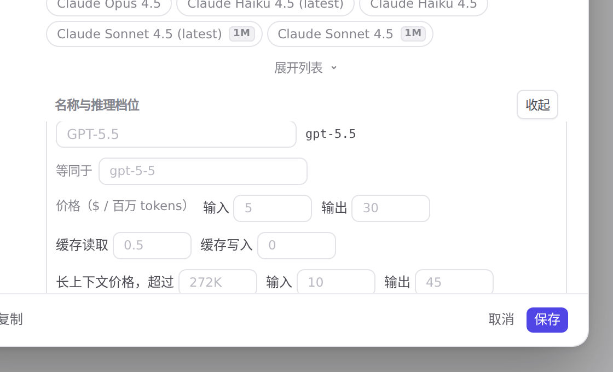

#1160 界面预览
commit 5045c8b · 回到 PR · 供应商编辑器里每个模型那一行，在「Accepts images」旁新增了一个「Searches the web by itself」勾选（是否由供应商自己回答联网搜索），答案按 <provider>/<model> 存进设置的 modelSearches，随 Save 提交、随「恢复默认」清掉，与图片的处理一致；「恢复默认」的提示文案也一并更新（中文/日文/德文）。
红线是鼠标走过的轨迹，红色圆环是一次点击；底部文字是这一步在做什么。空格暂停，← → 逐段查看。

模型行里的联网搜索答案 · Sub2API Relay 的编辑器

模型行里的联网搜索答案 · 「名称与推理档位」：每个模型一行，行内是名称、推理档位、图片和联网搜索
 模型行里的联网搜索答案 · 模型行：Accepts images 旁多了 Searches the web by itself
模型行里的联网搜索答案 · 模型行：Accepts images 旁多了 Searches the web by itself

模型行里的联网搜索答案 · Sub2API Relay 的 gpt-5.5 行：图片勾选旁多出的「自己能联网搜索」
模型行里的联网搜索答案 · 勾选后这一行，行尾多出未保存的改动标记